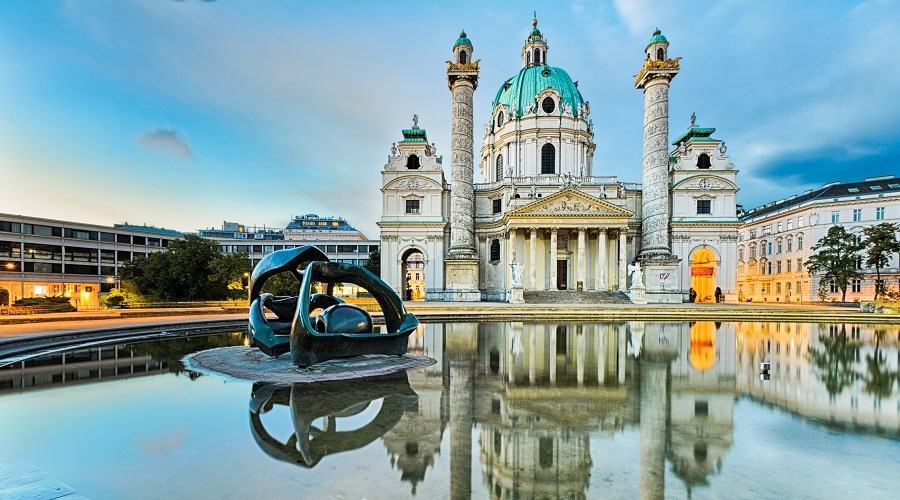

PROYECTO FINAL EEDD - MARGARITA CANTERO DURÁN
Bienvenido a Vienna
Descubra la encantadora belleza de Viena, una ciudad donde historia y modernidad se dan la mano. Pasee por sus emblemáticas calles, saboree su deliciosa gastronomía y experimente el rico patrimonio cultural que hace de Viena un destino verdaderamente único.


DESCUBRE MÁS